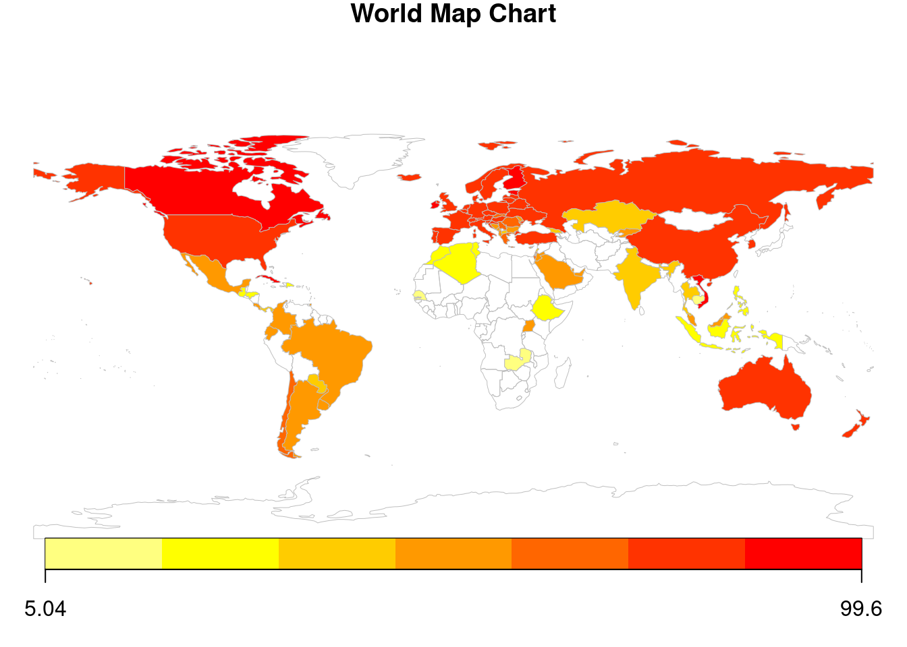
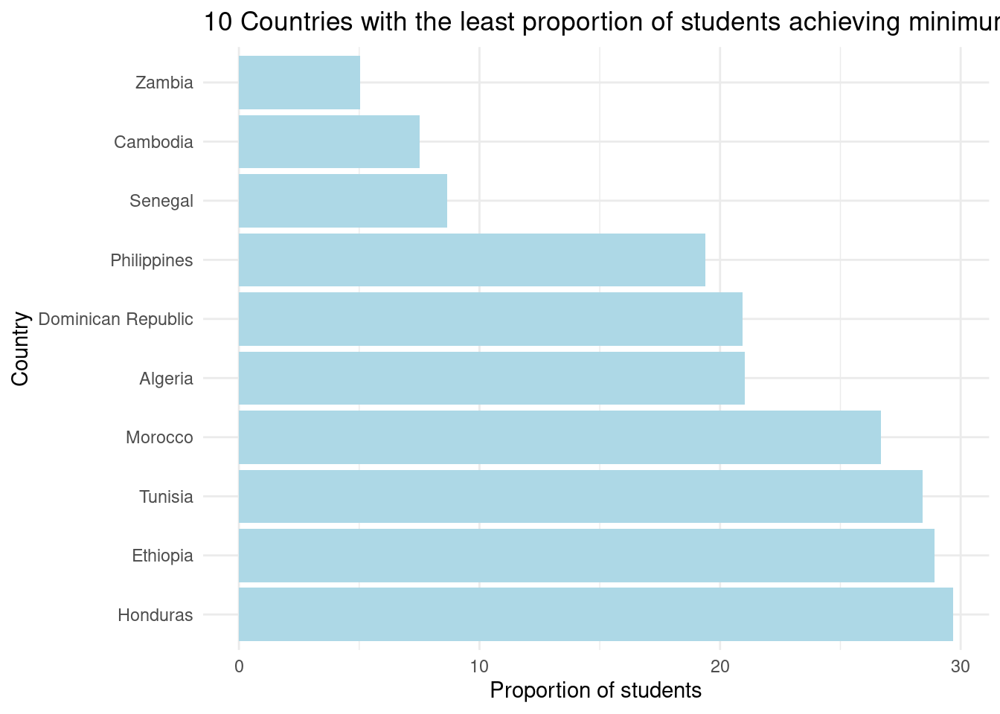
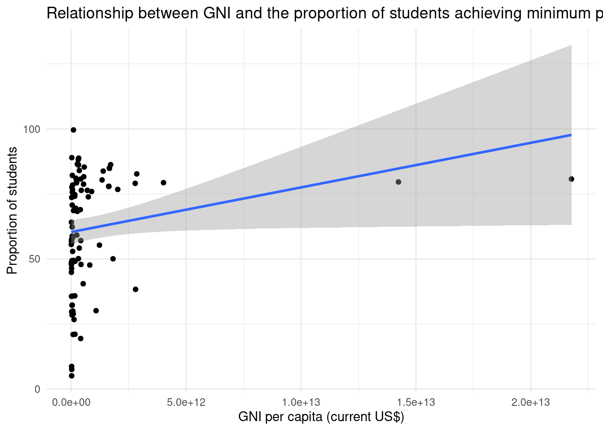
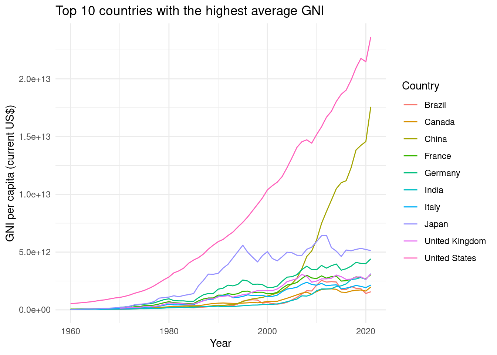

DCU - UNICEF R Dashboard
UNICEF Indicator: Proportion of students achieving minimum proficiency in reading
Education is a fundamental right, and ensuring that students achieve a minimum proficiency level in reading is crucial for their personal and professional development. This report examines the proportion of students at the end of lower secondary education who achieved at least a minimum proficiency level in reading, based on the Proportion of students achieving minimum proficiency in reading data. The visualizations below provide insights into the performance of various countries and the relationship between education outcomes and economic development.
Contents
World Map: Proportion of students achieving minimum proficiency in reading by country
The world map chart below provides a global overview of the proportion of students achieving at least a minimum proficiency level in reading at the end of lower secondary education. The color intensity represents the proportion of students achieving the minimum reading proficiency, with darker shades indicating higher proportions. This visualization helps identify regional trends and disparities in education outcomes.
10 Countries with the Lowest Proportion of Students Achieving Minimum Proficiency in Reading
The bar chart below displays the 10 countries where students struggle the most to achieve a minimum proficiency level in reading by the end of lower secondary education. These countries face significant challenges in providing quality education, and targeted interventions and policies may be needed to enhance educational outcomes.
Key Insights from the Bar Chart:
- The countries with the lowest reading proficiency rates are primarily low-income countries.
- Addressing the challenges faced by these countries may necessitate targeted interventions and support.

Scatterplot: Relationship between GNI and the proportion of students achieving minimum proficiency in reading
The scatterplot below shows the relationship between the Gross National Income (GNI) and the proportion of students achieving at least a minimum proficiency level in reading. This visualization helps us understand the potential impact of a country’s economic development on education outcomes. It is important to note that while a higher GNI might be correlated with better education outcomes, there could be other factors at play, such as government spending on education and cultural attitudes towards education.

Time-series chart: Top 10 countries with the highest average GNI
The time-series chart below shows the trend of the Gross National Income (GNI) per capita for the top 10 countries with the highest average GNI over the available years. Each line represents a country and is displayed in a different color, with the legend indicating the corresponding country. This visualization helps us understand the economic growth of these high-income countries and compare their progress over time.
Key insights from the time-series chart: -The top 10 countries with the highest GNI| have seen varying degrees of growth over the years. -Some countries have experienced more significant economic growth than others. -Understanding the factors contributing to the economic growth of these countries could inform policy-making in other nations.

Conclusion
The visualizations in this report provide insights into the educational landscape and the relationship between economic development and education outcomes. While the data reveals some correlations between GNI and the proportion of students achieving minimum proficiency in reading, it is crucial to consider other factors that could impact education outcomes. Policymakers and stakeholders must work together to address the challenges faced by low-income countries and ensure that all students have access to quality education.